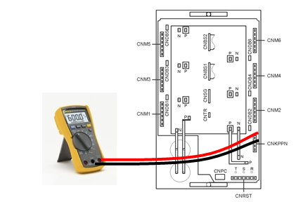

1.1.5.1. Outline
The recovery electric power that was generated when the robot reduces speed or moves toward the direction of gravity is discharged by resistance.
This error is related to an overheat caused by the resistance.
This error may occur due to a reduced performance of the cooling fan, an overheat detection sensor＊s circuit malfunction, a disconnection of the resistor, an overload of the recovery discharge capacity caused by momentary rapid movement, or the continuous movement of the robot.
1.1.5.2. Causes and checking methods
|
< Case: Error always occurs even when the motor is off.> (1) Check the parts related to the overheating error detection. n Please examine the resistor of the CNTR cable. n Please replace the CNSG cable and examine it. n Please replace the Servo drive unit and examine it. n Please replace the BD461/BD430 board and examine it.
< Case: Error always occurs at the moment when the motor is turned on.> (2) Please examine the components that are related to power. n Check the resistance value of the regenerative resistor connection cable. n Please replace the Servo drive unit and examine it. n Please examine the internal three-phase voltage of the controller. n Please examine the input three-phase voltage of the controller
< Case: Error occurs at a certain step according to the robot＊s operation speed.> (3) Change the robot playback speed and then check the error. n Please reduce the speed of the robot＊s operation to confirm the error. n Check the regenerative discharge resistor value.
< Case: Error occurs after five minutes from the start of the robot＊s operation.> (4) Please examine the controller＊s cooling system and recovery electric power level n Please examine the operational status of each fan. n Please examine the power voltage of each fan. n Please reduce the speed of the robot＊s operation to confirm the error. |
(1) Check the parts related to the overheating error detection.
The recovery resistance overheat error is detected by the Servo drive unit. Each end＊s on/off status of the overheat sensor that is attached to a recovery resistor is being monitored by the CNTR connector. Detected error will be sent through the CNSGC cable to be handled by the software at the BD461/BD430 board.
Figure 5.4 Locations of components in the Hi4a-0000 controller that are related to the recovery resistance overheat error

Figure 5.5 Locations of components in the Hi4a-0010/0012 controller that are related to the recovery resistance overheat error
n Examining the CNTR cable
Please examine the sensor from the CNTR connector that connects the overheat detection sensors. In a normal status, the sensor must be measured as less than 0.1 目.
Make sure to turn off the controller before inspecting it.
Medium-size robot＊s Servo drive unit : HSXY6
Small-size robot＊s Servo drive unit : HDAD6
Figure 5.6 Measuring the resistance value from the Hi4a-0000 controller＊s CNTR

Figure 5.7 Measuring the resistance value from the Hi4a-0012/0012 controller＊s CNTR
n Replacement and examination of the CNSG cable
Replace the CNSG cable with a new one and test it. If the error does not persist, cable connection problem caused this error. Please replace the CNSG cable with a new one.
n Replacement and inspection of servo drive unit
The components that detect the recovery discharge resistance overheat error are the HSXY6 (medium size) and the HDAD6 (small size). Please check the components in the controller that you are currently using and examine it. Please replace it with a new one and see if the error persists.
Medium-size robot＊s Servo drive unit : HSXY6
Small-size robot＊s Servo drive unit : HDAD6
n Replacement and examination of the BD461/BD430
Replace the BD461/BD430 with a new one and test it. If the error does not persist, board malfunction caused this error. Please replace the BD530/BD531 with a new one.

Figure 5.8 Replacement of the Hi4a-0000 controller＊s BD461/BD430

Figure 5.9 Replacement of the Hi4a-0010/0012 controller＊s BD461/BD430
(2) Check the parts related to the power.
The overheating error could also occur due to the disconnection of the resistor or an abnormality with the discharge control. In addition, the error could occur due to an increase in the regenerative discharge resistor value or the three-phase power voltage.
n Examining the recovery discharge resistor＊s disconnection
If the measured resistance value at the end of the cable for connecting the recovery discharge resistance is several M ohms(mega-ohm, M戒), the resistor＊s disconnection or connection problem of internal wiring caused this error. Please replace the recovery resistor with a new one or repair the wiring. Make sure to turn off the controller before inspecting it.
Medium-size (HSXY6) recovery discharge resistance value: 7.5 目 (Between K and P of the CNKPPN connector)
Hi4a-0010 recovery discharge resistance value : 25 目 (Between K and P of the CNRR connector)
Hi4a-0012 recovery discharge resistance value : 15 目 (Between K and P of the CNRR connector)

Figure 5.10 Measuring the resistance value from the Hi4a-0000 controller＊s CNKPPN

Figure 5.11 Measuring the resistance value from the Hi4a-0010/0012 controller＊s CNKPPN
n Replacement and inspection of servo drive unit
Please replace the module (HSXY6 for medium size, HDAD6 for small size) that detects the recovery discharge resistance overheat error, and check if an error persists. An error may occur continuously due to the module＊s internal circuit malfunction.
Medium-size robot＊s Servo drive unit : HSXY6
Small-size robot＊s Servo drive unit : HDAD6
n Examine the three-phase voltage (inside the controller)
Recovery discharge operation activates from approximately DC 375 V. If a voltage of more than AC 242 V enters the Servo drive unit, a recovery discharge resistance overheat error may occur when the motor is turned on. If the input voltage exceeds the allowed range, please examine according to the controller＊s input voltage examination procedures and three-phase internal voltage examination procedures.
赤 Servo drive unit input voltage specification: Three-phase AC220V
赤 Allowable range when the motor is on: Three-phase AC 198V ~ 242V
(3) Change the robot playback speed and then check the error.
In case the robot＊s speed is reducing or moving toward the direction of gravity, the direct current voltage of a Servo drive unit increases, and the voltage will be discharged with a recovery discharge resistance to prevent damage on the components that may be caused by voltage increase.
If a robot reduces its speed rapidly, or makes a high-speed movement toward the direction of gravity, it may cause this error. Please confirm if this error occurs according to the speed of the robot＊s operation.
n Make changes on the speed of the robot＊s operation.
If the recovery electric power that was generated by the robot＊s operation exceeds the controller＊s designed specification, recovery resistance overheat error may occur. Please reduce the speed of the step in which the error occurs and re-operate to confirm if the error persists.
n Examining the recovery discharge resistance value
If the resistance value measured at the end of the regenerative resistor connection cable exceeds the value stated in the manual by 10% or more, the resistor has a flaw. Please replace the resistor. Make sure to turn off the controller before inspecting it. Please refer to the previous page for the measuring method.
Medium-size (HSXY6) recovery discharge resistance value : 7.5 目 (Between K and P of the CNKPPN connector)
Hi4a-0010 recovery discharge resistance value : 25 目 (Between K and P of the CNRR connector)
Hi4a-0012 recovery discharge resistance value : 15 目 (Between K and P of the CNRR connector)
(4) Please examine the controller＊s cooling system and recovery electric power level.
If the recovery resistance overheat error occurs five minutes after the start of the robot＊s activation, the cause would be either the controller＊s cooling system has experienced a malfunction or the speed of the robot＊s operation exceeded the designed specification of the controller. Fans are being used at the rear of the controller to cool down the Servo drive unit＊s heat sink and the recovery discharge resistor.
Table 5-1 Location of the fans for each controller
|
Hi4a-0000 |
Hi4a-0010/0012 |
|
|
|
n Examining the operational status of each fan
Please replace a fan if it does not spin or the speed is abnormally slow. The life span of a fan may vary according to the operating environment or the amount of operation hours.
n Examining a fan＊s power voltage
Please check the input voltage of fans if all of them do not operate. The input voltage of a fan is set to AC 220 V, and the allowed range is within 10% of the standard voltage. If the voltage is lower than 10% of the standard voltage, the cooling effect will be reduced due to the slow spinning speed of a fan. In case when the voltage is low, please check the input voltage for the fan＊s power and the controller.
n Please confirm an occurrence of an error according to the speed of the robot＊s operation.
If an overheat error occurs during a continuous operation of more than five minutes, it is because the consecutive operation of the robot exceeded the cooling capacity of the controller. Please reduce the speed of the robot＊s operation, and check if the error persists. To resolve this error, if you had to reduce the operation speed too much just to resolve this error, please inquire at our office.